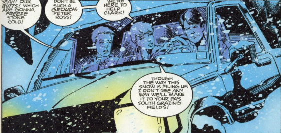
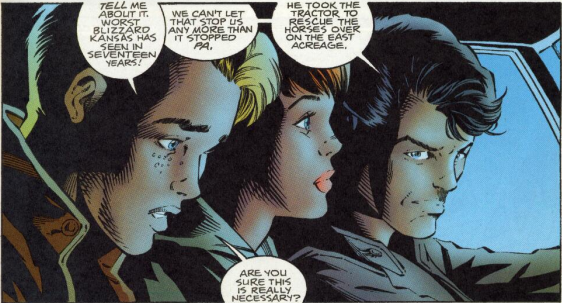
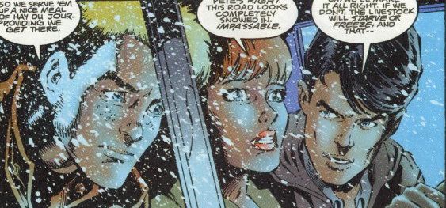

"Hello, he is Ram, a college student. He sees some social problems around locality. Instead of blaming governments he wants to take control and do something for society.

Ram feels helpless because neither he has a team nor guidance to solve these problems. He wants to discuss his ideas but he doesn’t know where to go.

"He knows how to solve a theoretical problem but he never got a chance to work on the real-life problem.
It is fourth image. you can add text here regarding it

It is fifth image. you can add text here regarding it